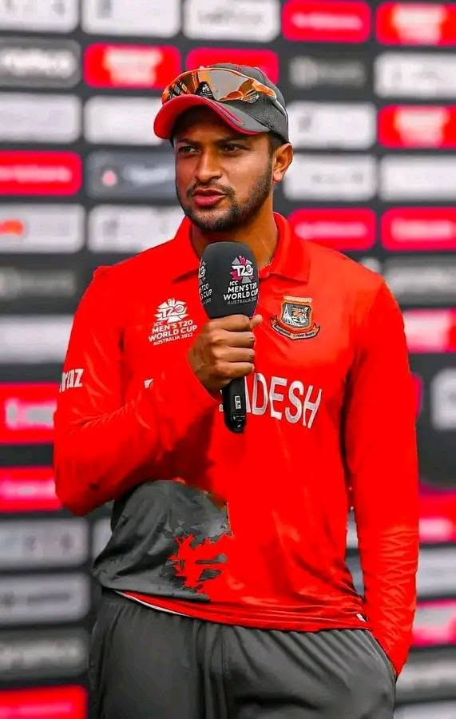
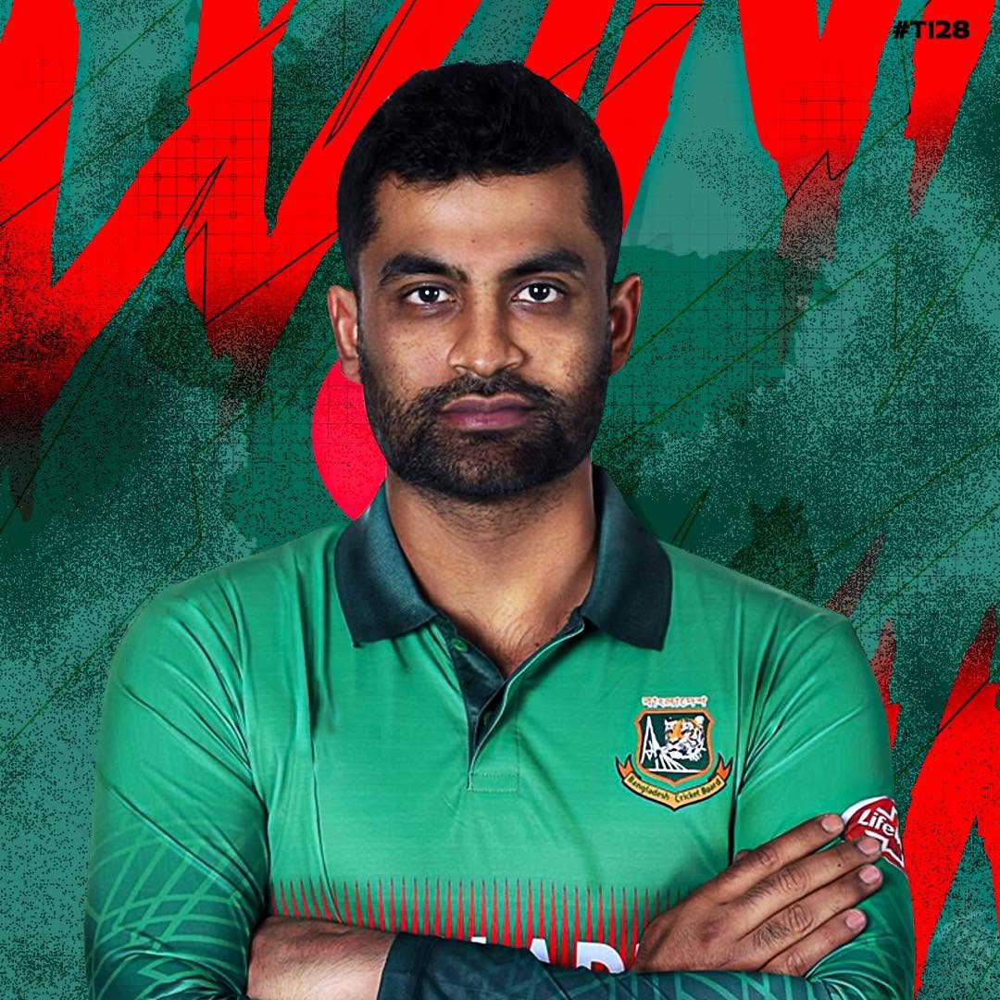
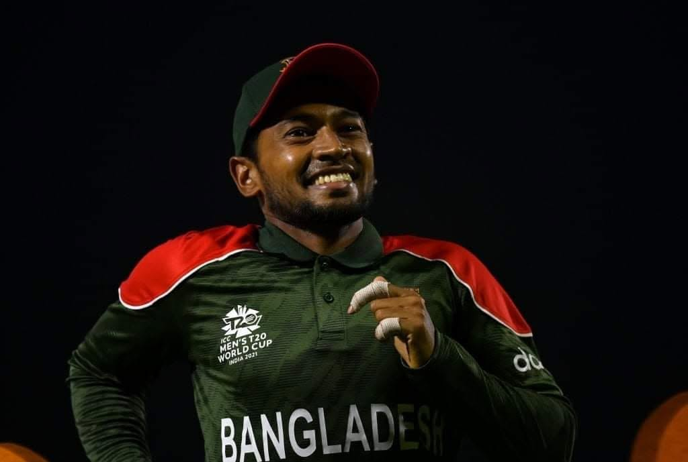
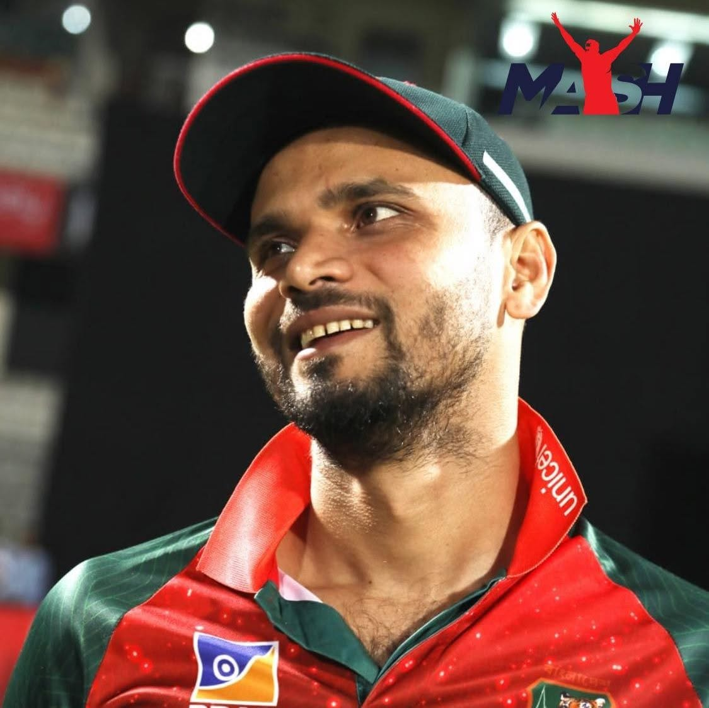
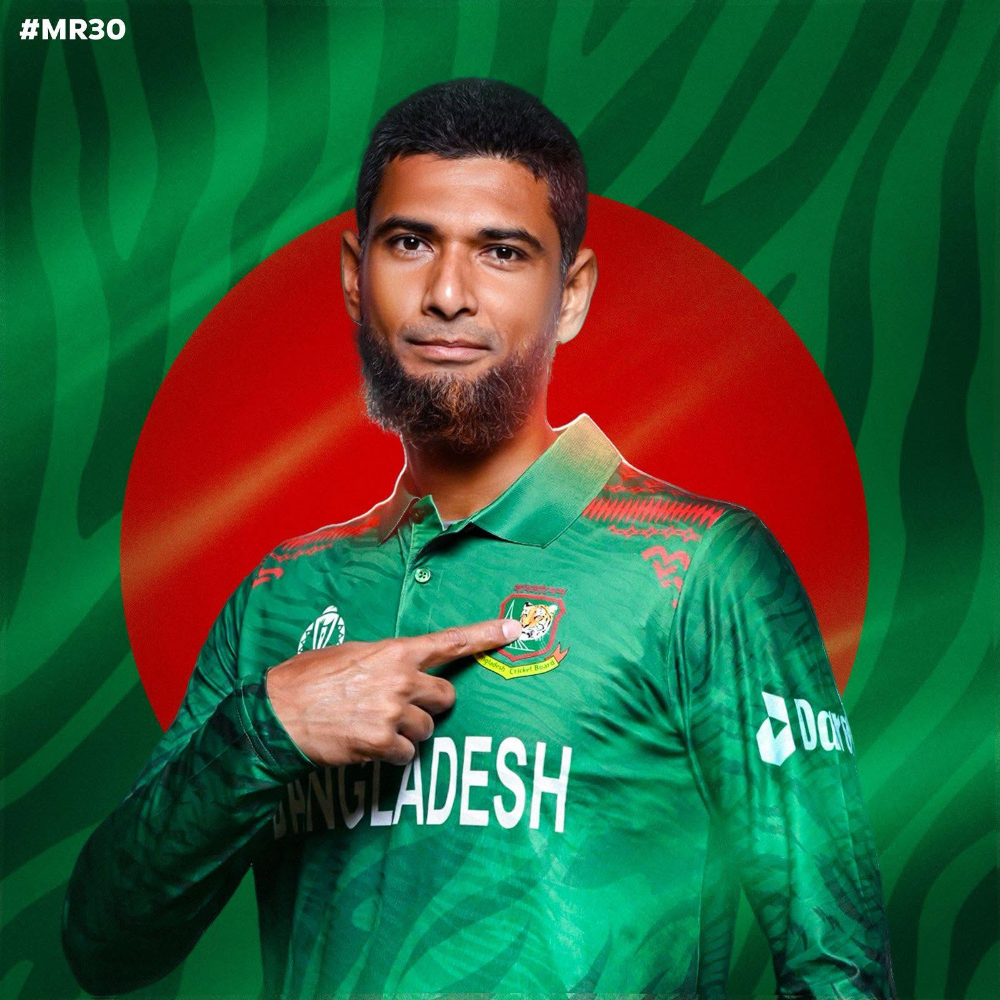

Shakib Al Hasan
Left-handed all-rounder. He has scored over 4,000 Test runs and taken over 200 Test wickets, and has held the number one all-rounder ranking in Tests, ODIs and T20Is.
Five players who carried Bangladesh cricket for over fifteen years.
For more than a decade, a small group of players carried the hopes of Bangladesh cricket. They played through the early struggles, the first big wins and the 2015 World Cup run, and young fans across the country grew up copying their batting, bowling and captaincy.
Each of them brought a different strength: Shakib with bat and ball, Tamim with fearless opening strokes, Mushfiqur with patient batting and sharp wicketkeeping, Mashrafe with fast bowling and leadership, and Mahmudullah with calm finishing under pressure.

Left-handed all-rounder. He has scored over 4,000 Test runs and taken over 200 Test wickets, and has held the number one all-rounder ranking in Tests, ODIs and T20Is.

Left-handed opener. In 2010 he became the first Bangladeshi to score a Test century at Lord's, and he is Bangladesh's leading ODI run-scorer.

Wicketkeeper-batter. He was the first Bangladeshi to score a Test double century, and is known for his focus and determination.

Fast bowler and long-time captain. He led the Tigers during the 2015 World Cup quarter-final run and is loved by fans as the "Narail Express".

All-rounder and finisher. He scored a century against England at the 2015 World Cup, and is known for staying calm when the team needs runs.
Player profiles: ESPNcricinfo players · Shakib on Wikipedia